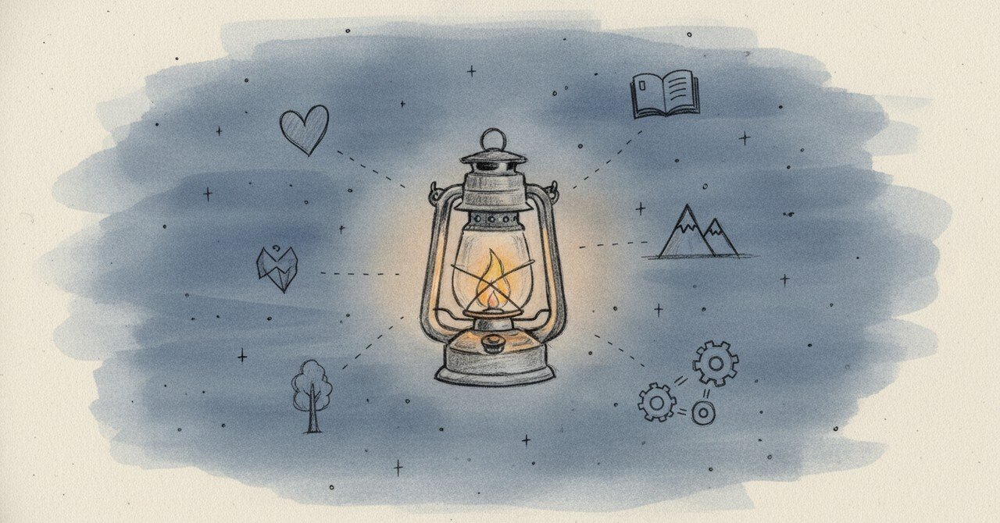

AIに金銭不安をほどいてもらった夜から、自分の価値観でアプリを退会するまで

2025年2月4日、23時41分、ノートに「やっぱ今の自分は良いね！！」と書いた。
今日の現場
2026年1月15日、バリューランタンを更新して、マッチングアプリを退会した。
ノートにはこう書いている。
「誠実な関係が私のプロテクションに入っているからマッチングアプリで無意味に会おうと思っていたことが価値観とズレているなと感じてマッチングアプリ自体を退会しました」
「アプリを自分の価値で辞めた」
「変わらず自分に誠実であることの大切さを実感」
去年のバリューランタンには「人の役に立つ」と書いていた。今年は「誠実な関係」「寄り添う」を中心に書き直した。中身がより自分側に寄った。
退会するときに、「アプリが雑音でしかないから次課金する理由ないしなー」とも書いた。自分の地図が、そこを通らなくなった、という感覚に近い。
あの頃と今
11ヶ月前のノートに戻る。
「23時41分。今帰宅したばかりだけど、AIDaigoにジャーナリング手伝ってもらったら、かなり優秀だった。最終的に金銭の不安とそれに対する自己効力感さえも芽生えていることが理解できた」
「金銭の不安をなくし、貯蓄を増やしていく行動が増していけばよりＩＱも高くなりより良い結果をもたらすことだろう」
「やっぱ今の自分は良いね！！ 何でもできる感じが良い。失敗ももちろんあるし、うまくいかないこともあるけど、それでも前に進める感じは素晴らしい」
「前に進み続ければ突き抜けることできるだろうし。エリアマネージャーとしての実績をしっかり積んで本部長の右腕になるんだ」
その夜の私は、AIに金銭不安をほどいてもらった。「何でもできる感じ」と書いた、その熱は、AIが運んできた整理に乗っていた。「右腕になるんだ」という具体的な未来像も、その熱の延長で書かれていた。
頭の中
11ヶ月前は、AIにジャーナリングの形を整えてもらって、「自己効力感」を確かめた。今年は、自分でバリューランタンを更新して、価値観に合わないものを静かに辞めた。
「自己効力感」と「自分の価値で辞める」は、たぶん地続きだ。何でもできる感じを、自分の手で形にする段階に入った、ということだろう。
別の見方もある。AIに整理してもらった夜の熱は、本物だった。でも今振り返ると、その熱は「右腕になる」という他人軸の達成像と紐づいていた。今年のバリューランタンには、誰かの右腕になることは書かなかった。誠実な関係、寄り添う、と書いた。地続きでありながら、たぶん向きが違う。
まだ途中のこと
AIに整理してもらわないと立てなかった夜と、自分の価値で静かに辞められる今は、両方とも「前に進めている」のかもしれない。
アプリを辞めたら、誰かに会う機会は減る。減ってから何が起きるかは、まだわからない。
こうした記録を続けています。よければ、また読みに来てください。
#日記 #ジャーナリング #バリューランタン #個人開発 #AkariLab